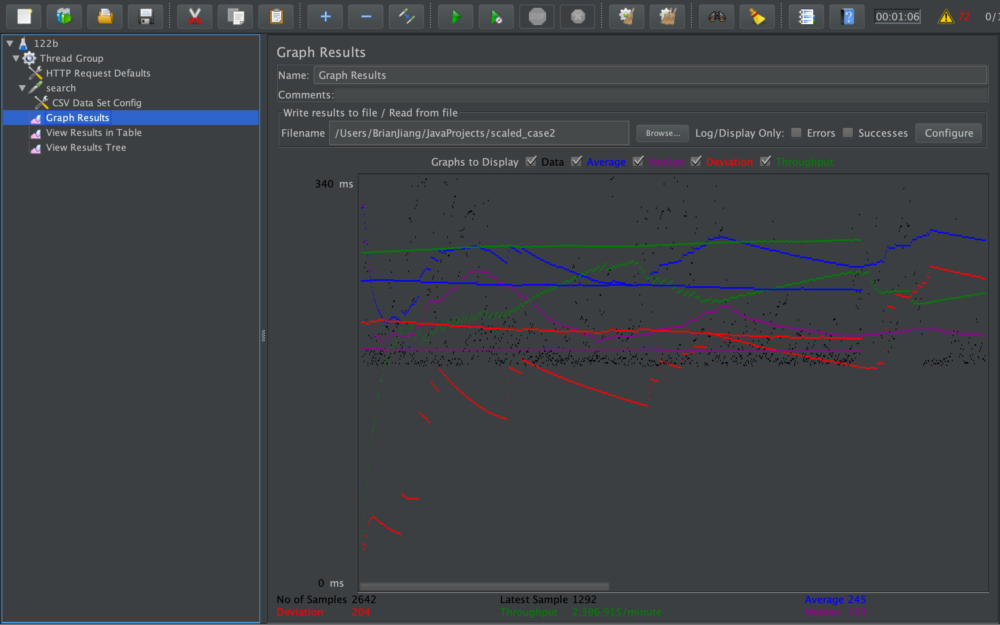

| Single-instance version cases | Graph Results Screenshot | Average Query Time(ms) | Average Search Servlet Time(ms) | Average JDBC Time(ms) | Analysis |
| Case 1: HTTP/1 thread | 173 ms | 3218742 ns | 2499770 ns | -- | |
| Case 2: HTTP/10 threads | 180 ms | 4381410 ns | 3606441 ns | -- | |
| Case 3: HTTPS/10 threads | 364 ms | 3963462 ns | 3062031 ns | -- | |
| Case 4: HTTP/10 threads/No prepared statements | 174 ms | 4071001 ns | 452358 ns | -- | |
| Case 5: HTTP/10 threads/No connection pooling | 181 ms | 9840100 ns | 4237807 ns | -- |
| Scaled version cases | Graph Results Screenshot | Average Query Time(ms) | Average Search Servlet Time(ms) | Average JDBC Time(ms) | Analysis |
| Case 1: HTTP/1 thread | 251 ms | 3043170 ns | 2290643 ns | -- | |
| Case 2: HTTP/10 threads |  | 245 ms | 3366564 ns | 2721934 ns | -- |
| Case 3: HTTP/10 threads/No prepared statements | 263 ms | 4096663 | 691 | -- | |
| Case 4: HTTP/10 threads/No connection pooling | 208 ms | 7419565 ns | 2811616 ns | -- |